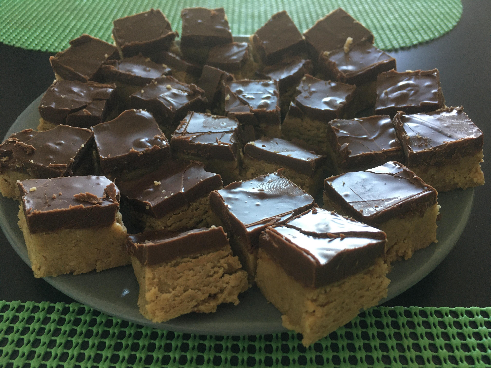

Chewy No-Bake Chocolate Peanut Butter Bar
Hey Everyone!
I'm sharing my favourite recipe with you, hope you will apprecieate and love it as much as I do. I like this Peanut Butter Bar as it is super easy and quick to make, you don't need too many different ingredients and only including healthy & natural ingredients, it's perfect for people who don't have much cooking experience and who don't like spending long times in the kitchen. No need to bake it either, just simply put it in the freezer for about an hour!
Easy, huh? Yet, the result will be a delicious, 'guilt-free'* snack that everyone will enjoy!
Just don't eat it all alone, sugar content still quite high as for any sweet!
Ingredients
For the Peanut Butter base
- 1 ½ cups peanut butter
- 1 ½ cups oat flour
- ½ cup honey (can use maple syrup)
For the Topping
- 1½ cups semi-sweet chocolate chips
- ¼ cups peanut butter
Instructions
- Mix the ingredients for the base 🥣
- Stir well 🥣
- Flatten it out in a tray / box / bowl that you can put in the freezer 🥧
- Mix the peanut butter and the chocolate chips for the topping 🍫 🥣 🥜
- Melt the chocolate & peanut butter mix in the microvawe (just a few seconds) 🥜 🍫
- Pour the chocolate on top of the base 🍫 🥜
- Freeze for at least 1 hour before cutting 🥶 ❄

Enjoy!
Further Recipes
If you liked this Peanut Nutter Bar, here are some other similar recipes for alternative delicious snacks